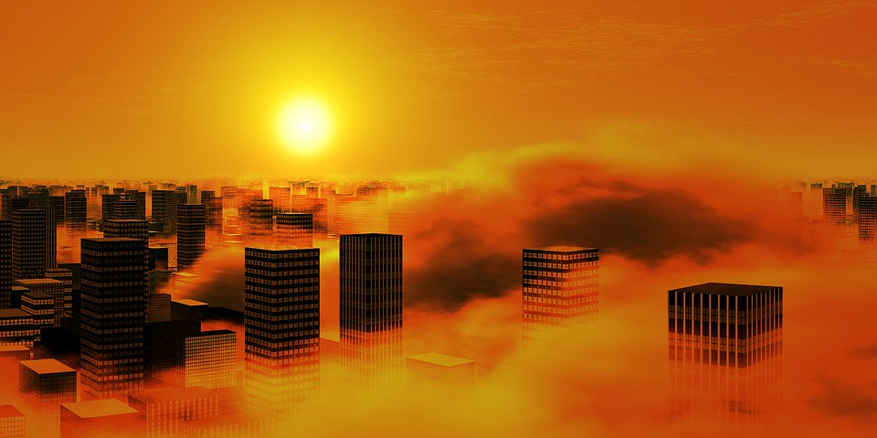

Many people tend to believe that there can only be good coming from planting trees and flowering plants throughout the city. To a degree, that is true. However, it's something that also brings some unforeseen issues that make things difficult for many that work and/or reside within the city.
There will always be advantages and disadvantages to having trees in urban areas. I will mention a few of each here.
Three trees placed strategically around a single-family home can cut summer air conditioning needs by up to 50 percent. By reducing the energy demand for cooling our houses, we reduce carbon dioxide and other pollution emissions from power plants.
Trees absorb odors and pollutant gases (nitrogen oxides, ammonia, sulfur dioxide and ozone) and filter particulates out of the air by trapping them on their leaves and bark.
There are many other positives of having trees in urban environments, and the link below will show many more of them.
source: Top 22 Benefits of Trees
For every effort put forth to combat certain issues, there will come a time where it's shown to do the opposite as well. In other words, the intent may be good natured, but the result may not appear that way.
Work in which I have been involved considers how air flows in and around city streets, dispersing vehicle emissions on innocent pedestrians and cyclists. If you consider any wall, parked cars, hedges or trees as barriers that cause the natural pattern of air flow to be diverted, then you can see how trees may not always point transport pollutants in the “right” direction.
On the extreme side of things, your typical street with avenue trees, can almost lead to a “green” roof effect, when the canopy in full bloom. This can prevent pollutants from escaping the street and air quality can be greatly impacted.
source: Greener but not cleaner? How trees can worsen urban air pollution
To be fair, tree roots themselves are not the direct cause of foundation damage, though many homeowners believe they are. Instead, the changes in the condition of the soil are what actually cause most of the damage to home foundations.
This most often manifests itself in the form of concrete settling. In many situations, concrete settling is only unsightly, but sometimes it can also be dangerous.
source: WHEN TREES ATTACK: HOW TREE ROOTS DAMAGE YOUR FOUNDATION
The next section will focus more on other issues that come with having trees and plants in urban areas.